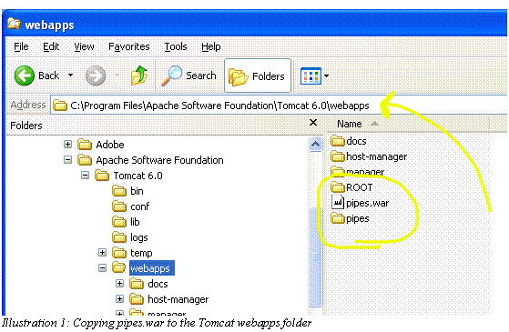
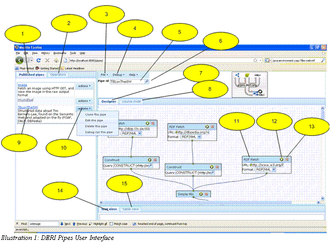
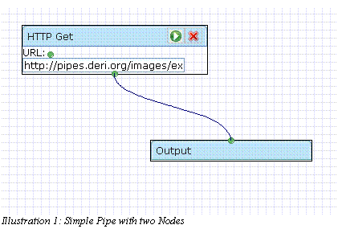
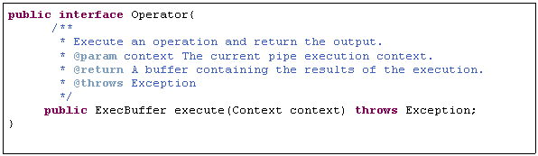
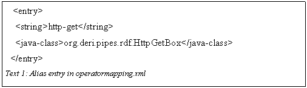
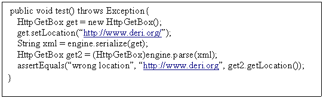
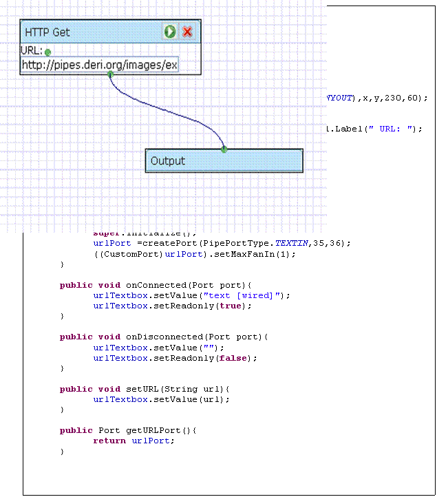
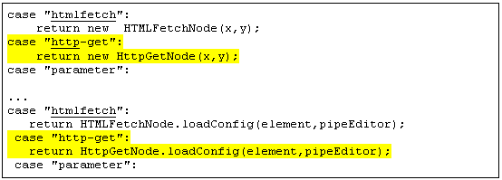
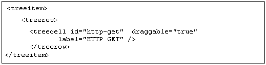

1 Installation
This section describes how to download and install the DERI Pipes application
1.1 Pre-requisites
Before installing DERI Pipes you will need:
1. Java 1.6 or newer
2. A servlet container, such as Tomcat
1.2 Installation
1. Start tomcat
2. Download the current release of DERI Pipes (pipes-x.x.x.war) from sourceforge http://www.sourceforge.net/projects/swp
3. Rename the war file to pipes.war and copy it to the webapps folder. Tomcat will unpack the war file to create the pipes web application.

2 Using Pipes Web Application
2.1 Accessing Pipes
Depending on the configuration of your servlet engine, the pipes web application can be accessed at http://server:port/pipes/ . For a typical local installation of pipes in Tomcat, try http://localhost:8080/pipes/
2.2 Becoming Familiar With Pipes
The following picture of the Pipes web interface may help the user become familiar with the primary operations of the Pipes user interface.

A brief description of the marked items follows:
1. Published Pipes tab. Select this tab to run, edit or copy an existing pipe. A small number of example pipes are provided with the application.
2. Operators tab. Select this tab to view the available operators. Add a new operator onto your pipe application by dragging the chosen operator onto the design area.
3. File menu item. Use this menu to start a new pipe or to save your work.
4. Debug menu item. Use this menu to execute your pipe in debug mode. The output of the pipe execution is displayed at the lower part of the screen (see 14 and 15).
5. Pipe ID text field. This field displays the name of the pipe currently in the editor. Use this field to assign a name to a new pipe before saving.
6. Pipe
details glass. Select this icon to view and edit the pipe name
description and password.
7. Designer tab. Select this tab to modify the pipe in design mode.
8. Source Code tab. Select this tab to view the pipe xml source code to be executed.
9. Saved Pipe execution link. Click on the link to view the output of the pipe in html, RDF/XML or raw format.
10. Actions context menu. Choose an item from this menu to copy, edit, delete or debug a saved pipe.
11. A Pipe Operator Node. Enter the details required for the chosen operation.
12. Pipe Operator Play Button. Click this button to view the output of the pipe as far as this operator. The output is displayed in the debug window (see 14 and 15).
13. Delete Operator button. Click on this button to delete an operator.
14. Debug Text View. This tab displays the output of a debug operation in the raw form.
15. Debug Table View. This tab displays the output of the debug operation in tabular form.
2.3 Connecting Pipe Operators
Pipe Operators are connected by dragging the output port (at bottom center) of one operator to the input port (top center) of another. The pipe is complete when all required nodes have been added to the model, each connected to at least one other node. Each pipe model has one Output node which must be connected to in order for the model to be complete. The simplest pipe will always have at least two nodes.

Connections between Pipe Node Operators are made by dragging the output node of the operator to the input node of the next operator in the pipe. Note that not all pipe nodes are compatible. Some pipes expect input format of a particular type such as RDF, and will not accept other formats. If the connections between two pipes refuse to 'stick', this is likely because their formats are incompatible.
2.4 Viewing the Log Files
Pipes logs messages using slf4j logging framework. Look for pipes log messages in or around your other tomcat log files. Improved instructions on configuration of logging is intended for the next release.
3 Using Pipes on the command line
The DERI Pipes Engine allows pipes to be executed on the command line or embedded within an application.
To use pipes on the command-line, download and unpack the pipes-engine package.
Note: Pipes can be used to readline input from the STDIN input stream, by including a <stdin/> operator as a source in your pipe.
To invoke a pipe expecting name and place parameters, invoke as follows:
bin/pipes path/to/pipe/syntax/file name=Giovanni place=Galway
The remainder of this section shows by example how to execute a pipe on the command line. Here follows an example pipe reading from stdin. This requires 2 files, input.txt and pipe.txt which are shown below:
Command line is:
bin/pipes pipe.txt <input.txt
Output is:
<rdf:RDF xmlns:rdf='http://www.w3.org/1999/02/22-rdf-syntax-ns#'
xmlns:foaf='http://xmlns.com/foaf/0.1/'>
<foaf:person rdf:about='http://example.com/Robert_Fuller'>
<foaf:name>Robert Fuller</foaf:name>
<foaf:firstName>Robert</foaf:firstName>
<foaf:surname>Fuller</foaf:surname>
</foaf:person>
<foaf:person rdf:about='http://example.com/Giovanni_Tummarello'>
<foaf:name>Giovanni Tummarello</foaf:name>
<foaf:firstName>Giovanni</foaf:firstName>
<foaf:surname>Tummarello</foaf:surname>
</foaf:person>
<foaf:person rdf:about='http://example.com/Dahn_Le_Pouch'>
<foaf:name>Dahn Le Pouch</foaf:name>
<foaf:firstName>Dahn</foaf:firstName>
<foaf:surname>Le Pouch</foaf:surname>
</foaf:person>
</rdf:RDF>
============input.txt========================
Robert Fuller
Giovanni Tummarello
Dahn Le Pouch
=============================================
=============pipe.txt========================
<pipe>
<code>
<scripting>
<language>groovy</language>
<script>
import groovy.xml.MarkupBuilder
def writer = new StringWriter()
def xml = new MarkupBuilder(writer)
xml.'rdf:RDF'('xmlns:rdf':'http://www.w3.org/1999/02/22-rdf-syntax-ns#','xmlns:foaf':'http://xmlns.com/foaf/0.1/'){
input.inputStream.eachLine{
name -> parts=name.split(/\s/,2);
xml.'foaf:person'('rdf:about':"http://example.com/${name.replaceAll(' ','_')}"){
'foaf:name'(name)
'foaf:firstName'(parts[0])
'foaf:surname'(parts[1])
}
}
}
writer.toString();
</script>
<source>
<stdin/>
</source>
</scripting>
</code>
</pipe>
=============================================
4 Using Pipes Programatically
4.1 Executing Stored Pipes
Pipes provides a powerful and simple API to allow pipe development and execution from within the java applications. A good starting point for developers is to retrieve the pipes application from CVS on sourceforge, and to begin by studying some of the unit tests available.
In code a pipe can be created programatically and executed. Alternatively pipes can be retrieved from the pipe store for execution; this usefully allows pipes to be developed in the graphical environment but used other in non-web applications.

Note that creating a Pipe Engine is a relatively expensive operation, however engines may be safely shared among threads of execution. Where practical an engine should be shared within an application. A default engine is avaliable by calling Engine.getDefaultEngine();
4.2 Pipe XML Definitions
While a detailed explanation of the Pipe XML format is left for a later date, it is worth noting that there are two separate xml formats associated with the pipes. The first is a 'config' format which is used for rendering the pipe node operators in the GUI. The 'syntax' xml format is contains the definition of the pipes for the execution environment. While both formats are saved in the Pipe Store, only the syntax format is required in order to recreate a pipe for execution. In some cases where the graphical environment is not required, it may be desireable to save only the pipe syntax in order to minimise overheads involved in parsing the pipes. For efficiency pipes are parsed from XML into java objects using Xstream.
4.3 The Pipe Store
By default pipe XML definitions are stored one-per-file in a directory on the file system. In the case of many stored pipes these should be stored throughout a logical tree of sub-folders. A database implementation of the Pipe Store is also provided. Those wishing for an alternative implementation of the Pipe Store should impelment the org.deri.pipes.store.PipeStore interface. The PipeStore can be set by calling engine.setPipeStore(pipeStore)
5 Tutorial – Developing a new Pipe Operator
This section is intended to encourage developers to extend the functionality of DERI Pipes by creating new pipe Operators.
5.1 Overview
Conceptually there are two things which need to be done in order to create a new operator and make it available on the Pipes GUI. Firstly, and most simply, provide an implementation of the org.deri.pipes.core.Operator interface. Secondly, implement a class extending the abstract class org.deri.pipes.ui.PipeNode which represents the new Operator on the GUI and is responsible for loading to/from xml.
This section walks through the steps required to implement a simple HTTP GET Operator and add it to the GUI.
5.2 Implementing the Operator interface
The operator interface is very simple consisting of a single method:

Implementors should make note of the following guidelines:
1. Any variables not required as part of the pipe syntax should be declared transient in order to avoid serialization into xml.
2. To support multithreaded execution Operator should not maintain state information about the execution.
3. In order to maximise reusability, define Operators to specialise at a single operation.
Note regarding the ExecBuffer – There are currently 5 implementations of ExecBuffer which are:
1. SesameMemoryBuffer – Holds RDF into an in-memory model.
2. SesameTupleBuffer – Holds sqarql query results in in-memory.
3. StreamBuffer – Holds a reference to a URL which can be streamed OR holds string content in memory.
4. BinaryContentBuffer – Holds binary or text data in memory.
5. MultiExecBuffer – A collection of two or more ExecBuffers possibly executed in parallel.
It is important to choose the ExecBuffer implementation which fits most closely with the type of result produced by your operator. Our example HTTP GET Operator produces an BinaryContentBuffer because the format of the retrieved data is not known beforehand. Subsequent operators can be applied to the BinaryContentBuffer to transform the data from raw format into the desired output format.
Code for the HTTP GET Operator follows. A couple of items worthy of note are:
1. XstreamAlias annotation declares the xml element name for this class. (NB: Not strictly required since aliases are mapped in operatormapping.xml file)
2. The logger is defined as transient.
3. No state information is saved.
![Text Box: /**
* Performs a Http Get into a binary content buffer using the
* HttpClient provided by the Context.
* @author robful
*
*/
@XStreamAlias("http-get")
public class HttpGetBox implements Operator{
transient Logger logger = LoggerFactory.getLogger(HttpGetBox.class);
String location;
public String getLocation() {
return location;
}
public void setLocation(String location) {
this.location = location;
}
/* Perform a HTTP GET operation and return the
* result in a BinaryContentBuffer.
*/
@Override
public ExecBuffer execute(Context context) throws Exception {
HttpClient client = context.getHttpClient();
GetMethod getMethod = new GetMethod(location);
int response = client.executeMethod(getMethod);
if(response != 200){
logger.warn("The http get request to ["+location+"] response code was ["+response+"]");
}
BinaryContentBuffer buffer = new BinaryContentBuffer();
buffer.setContent(getMethod.getResponseBody());
buffer.setCharacterEncoding(getMethod.getRequestCharSet());
Header contentType = getMethod.getResponseHeader("Content-Type");
if(contentType != null){
buffer.setContentType(contentType.getValue());
}
return buffer;
}
}
Text 2: Implementation of Operator Interface](pipes-guide_files/image007.gif) |
After implementing the class, an entry is created in the operatormapping.xml file:

Once implemented the serialization for the class can be verified in a unit test.
5.3 
Extending the PipeNode class
Unfortunatley this task remains a bit daunting and requires attention of the core developers in order to ease the burden required to provide new operators, nevertheless we demonstrate a simple gui component extending the PipeNode class for our HTTP GET operator. The finished GUI Element has the following appearance, here shown connected to Output. The node is quite simple, collecting only the URL location.
|  |
Full source code implementation of the class follows. Items of note include the ANYOUT port type which allows this node to be connected to classes expecting specific input types. Execution errors will occur when the connected operator's expectations are not met, for example if an Operator expecting rdf receives an image.
The remaining two methods respectively serialise and parse the xml format for this operator:
![Text Box: @Override
public Node getSrcCode(Document doc,boolean config){
if(getWorkspace()!=null){
Element srcCode = doc.createElement(tagName);
if(config){
super.setPosition(srcCode);
}
Element locElm =doc.createElement("location");
locElm.appendChild(getConnectedCode(doc, urlTextbox, urlPort, config));
srcCode.appendChild(locElm);
return srcCode;
}
return null;
}
/**
* Creates a new HttpGetNode and adds it into the configuration.
* @param elm The element defining this http-get
* @param wsp The PipeEditor workspace
* @return
*/
public static PipeNode loadConfig(Element elm,PipeEditor wsp){
HttpGetNode node= new HttpGetNode(Integer.parseInt(elm.getAttribute("x")),Integer.parseInt(elm.getAttribute("y")));
wsp.addFigure(node);
Element locElm=XMLUtil.getFirstSubElementByName(elm, "location");
node.loadConnectedConfig(locElm, node.urlPort, node.urlTextbox);
return node;
}
}](pipes-guide_files/image011.gif)
Finally, once the HttpGetNode has been implemented, it needs to be referenced in the following two files:
-

PipeNodeFactory.groovy (2 places) to produce the correct PipeNode when the http-get element is encountered:
- index.zul one place to have the HTTP GET name appear on the Operators tab.
- Documentation for the should be added to operators.html, or override the getDocumentationLink() method in your implementation of PipeNode to link to the correct documentation location.

Once these changes have been made the new PipeNode is available in the Pipes web interface.
6 Pipe Operator
Each Pipe operator has one or more inputs and only one output. The inputs can be various things, e.g. URIs, text or output from another operator. The output of an operator can be:
- a single RDF graph
- an RDF datasets (consisting of a default graph an zero or more named graphs)
- an SPARQL result set.
General Pipe syntax
This section of the documentation requires updating.
Syntax template:
<pipe>
<parameters>
<parameter>
<id>parameter's name (must be
unique)</id>
<label>description of the
paramenter</label>
</parameter>
....
</parameters>
<code>
<blockname>
<parameter>
<nestedblockname> ...</nestedblockname>
</parameter>
...
</blockname>
</code>
</pipe>
Example (See also http://pipes.deri.org:8080/pipes/Pipes/?id=custompipe, http://pipes.deri.org:8080/pipes/Pipes/?id=mixderifoaf ? )
<pipe>
<parameters>
<parameter>
<id>id1</id>
<label>First Deri team
member</label>
</parameter>
<parameter>
<id>id2</id>
<label>Second Deri team
member</label>
</parameter>
</parameters>
<code>
<simplemix>
<source>
<fetch>
<location>http://www.deri.ie/fileadmin/scripts/foaf.php?id=$id1$</location>
</fetch>
</source>
<source>
<fetch>
<location>http://www.deri.ie/fileadmin/scripts/foaf.php?id=$id2$</location>
</fetch>
</source>
</simplemix>
</code>
</pipe>
FETCH
This section of the documentation requires updating
The Fetch operator is used to fetch data from an URI in RDF/XML or
SPARQL-RESULT/XML . There is an optional attribute "accept" which
determines the HTTP accept header for the request. Allowed value are
:"rdfxml" and "sparqlxml".
Syntax template:
<fetch accept="rdfxml/sparqlxml">
<location>
URL OF THE WEB FILE TO FETCH
</location>
</fetch>
or
<fetch accept="rdfxml/sparqlxml">
<sparqlendpoint>
<defaultgraph>URI of the default
graph</defaultgraph>
<endpoint>URL to the Sparql
endpoint</endpoint>
<query>the remote SPARQL
query</query>
</sparqlendpoint>
</fetch>
Example:
<fetch accept="rdfxml">
<location>http://www.w3.org/People/Berners-Lee/card?</location>
</fetch>
MIX
This section of the documentation requires updating
The MIX operator is used to merge triples from multiple RDF sources. Each RDF Source can be either a constant (directly input as RDF/XML) or another Pipe operator which can output RDF/XML data. There is an optional attribute "uri". If it is speficfied, then the sourcedata will be placed into an named graph with attribute's value as graph name.
Note: Constant RDF/XML text has to be wrapped into a CDATA section
Syntax template:
<simplemix>
<source>Enter one or more sources</source>
....
</simplemix>
Example (see http://pipes.deri.org:8080/pipes/Pipes/?id=simplemix )
<simplemix>
<source>
<fetch>
<location>http://www.w3.org/People/Berners-Lee/card?</location>
</fetch>
</source>
<source>
<![CDATA[
<rdf:RDF
xmlns:j.0="http://xmlns.com/foaf/0.1/">http://xmlns.com/foaf/0.1/"
xmlns:wot="http://xmlns.com/wot/0.1/"
xmlns:rdf="http://www.w3.org/1999/02/22-rdf-syntax-ns#">
<j.0:PersonalProfileDocument>
<j.0:primaryTopic>
<j.0:Person rdf:about="http://g1o.net/foaf.rdf#me"
j.0:givenname="Giovanni"
j.0:family_name="Tummarello"
j.0:nick="Jccq"
j.0:title="Ph.D"
j.0:icqChatID="68832951">
<j.0:knows>
...
</rdf:RDF>
]]>
</source>
</simplemix>
CONSTRUCT
This section of the documentation requires updating
The Construct query is used to create expected triples by using
SPARQL-CONSTRUCT query on specified RDF sources. The output of this
operator is the result of a SPARQL-CONSTRUCT query executed on the one
or more sources. Each RDF Source can be either a constant (directly
input as RDF/XML) or another Pipe operator which can output RDF/XML
data. There is an optional attribute "uri". If it is speficfied, then
the source data will be placed into an named graph with attribute's
value as graph name.
Note: Constant RDF/XML text has to be wrapped into a CDATA section.
Syntax template:
<construct>
<source uri=uri>Enter one source syntax here!</source>
...
<query>
Enter SPARQL construct query here!
</query>
</construct>
SELECT
This section of the documentation requires updating
Similar to CONSTRUCT operator, the SELECT operator is used performs a
SELECT query and outputs the result in the SPARQL-Result XML format.
This operator is only used as an input for FOR
operator. Each RDF Source can be either a constant (directly input
as RDF/XML) or another Pipe operator which can output RDF/XML data.
There is an optional attribute "uri". If it is speficfied, then the
sourcedata will be placed into an named graph with attribute's value as
graph name.
Note: Constant RDF/XML text has to be wrapped into a CDATA section.
Syntax template:
<select>
<source uri="uri">Enter one source syntax here!</source>
<source >Enter one source syntax here!</source>
<query>
Enter SPARQL SELECT query here!
</query>
</select>
Example:
<select>
<source><fetch><location>http://www.w3.org/People/Berners-Lee/card?</location></fetch></source>
<source><fetch><location>http://g1o.net/foaf.rdf?</location></fetch></source>
<query>
<![CDATA[
select ?uri where {?s
<http://xmlns.com/foaf/0.1/knows?>
?uri} ORDER by desc(?uri) LIMIT 2 offset 10
]]>
</query>
</select>
RDFS
This section of the documentation requires updating
Similar to MIX operator,this RDFS operator will merge specified RDF
sources and then infer implicit triples from the merged triples.The
output of this operator is also RDFXML format. Each RDF Source can
be either a constant (directly input as RDF/XML) or another Pipe
operator which can output RDF/XML data. There is an optional attribute
"uri". If it is speficfied, then the sourcedata will be placed into an
named graph with attribute's value as graph name.
Note: Constant RDF/XML text has to be wrapped into a CDATA section.
Syntax template:
<rdfs>
<source>Enter one or more sources</source>
</rdfs>
Example (See also http://pipes.deri.org:8080/pipes/Pipes/?id=RDFSReasoner ? )
<construct>
<source>
<rdfs>
<source><fetch><location>http://www.w3.org/People/Berners-Lee/card?</location></fetch></source>
<source><fetch><location>http://xmlns.com/foaf/spec/index.rdf?</location></fetch></source>
</rdfs>
</source>
<query>
<![CDATA[
PREFIX foaf: <http://xmlns.com/foaf/0.1/?>
PREFIX rdf: <http://www.w3.org/1999/02/22-rdf-syntax-ns#?>
CONSTRUCT
{ ?x foaf:name ?name }
WHERE
{ ?x foaf:name ?name . ?x rdf:type foaf:Agent}
]]>
</query>
</construct>
FOR
This section of the documentation requires updating
The FOR operator will invoke a parametrized pipe multiple times and merge the resulting outputs of each invocation. The <sourcelist> specifies an operator that ouputs a SPARQL result set. For each result in the set, the variable values will be subtituted into the parametrized pipe specified in <forloop> and the pipe will be invoked.
Syntax template:
<for>
<sourcelist>
requires SPARQL XML FORMAT
</sourcelist>
<forloop>
<simplemix><fetch><location>$uri$</location></fetch><simplemix>
</forloop>
</for>
Example (See also http://pipes.deri.org:8080/pipes/Pipes/?id=forloop ): This pipe fech from the URIs of all five people known by the author of a FOAF file.
<for>
<sourcelist>
<select>
<source><fetch><location>http://www.w3.org/People/Berners-Lee/card?</location></fetch></source>
<query>
<![CDATA[
select ?uri where {?s
<http://xmlns.com/foaf/0.1/knows?>
?uri} ORDER by desc(?uri) LIMIT 5
]]>
</query>
</select>
</sourcelist>
<forloop>
<simplemix><source><fetch><location>$uri$</location></fetch></source></simplemix>
</forloop>
</for>
Patching Operators
This section of the documentation requires updating
The purpose of these operators is to provide means for producing and
automatically applying patches to RDF data sources.
Let us explain their usage with a use case (see also http://pipes.deri.org:8080/pipes/Pipes/?id=patch
?).
Suppose I want to build a pipe that outputs the merge of my own and Bob's FOAF files, but I also want to automatically remove from the output some statements that are included in Bob's file, which I think are wrong (e.g. Bob is declaring to be able to program in Java, but I'm sure he is cheating ). Of course Bob has the right to state such a fact in his own RDF file, and obviously I don't have the rights (and the technical means) to hack the file. So I need a mechanism to automatically exclude the statement in question from the "view" I want to produce and perhaps expose to the world, while being able to reflect the future updates Bob will apply to his FAOF description. Let's see how to do it with Semantic Web pipes.
I first have to publish on the web (say to http://mywebsite/patch.rdf ?) an RDF file including, in this case, a single triple:
ex:Bob ex:skill ex:JavaProgramming
Then I use the patch-generator block to produce the patch:
<patch-generator>
<source>
<fetch><location>http://mywebsite/patch.rdf?</location></fetch>
</source>
</patch-generator>
The output of this simple operator will be an RDF which express the "negation" of all the triples in the source. In this case something that means: NOT(ex:Bob ex:skill ex:JavaProgramming).
The next step is to create a pipe that applies the patch to Bob's FOAF file. To do this I'll use the patch-executor operator, with the previous block nested:
<patch-executor>
<source>
<fetch><location>http://bobswebsite.org/foaf.rdf?</location></fetch>
</source>
<source>
<fetch><location>http://mywebsite.org/foaf.rdf?</location></fetch>
</source>
<source>
<patch-generator>
<source>
<fetch><location>http://mywebsite/patch.rdf?</location></fetch>
</source>
</patch-generator>
</source>
</patch-executor>
This composite pipe will take as input the Bob's FOAF, my FOAF file and my patch and will produce as output an RDF which contains all the statements form the two FOAF minus the one I distrusted.
SMOOSHER
This section of the documentation requires updating
This operator produces a merge of all the sources smooshing URIs based
on the owl:sameAs statement included in the sources themselves.
For example (see also http://pipes.deri.org:8080/pipes/Pipes/?id=smoosher?), let us consider two RDF files as input. The first one (published at http://bobwebsite.org/foaf.rdf ?) says:
http://bobwebsite.org/Bob/ ? ex:skill ex:JavaProgramming
and the second (published at http://charleswebsite.org/info.rdf ?) says:
http://charleswebsite.org/Bob/?
foaf:knows http://charleswebsite.org/Charles/?
http://bobwebsite.org/Bob/?
owl:sameAs http://charleswebsite.org/Charles/
?
By creating a pipe like the following:
<smoosher>
<source>
<fetch><location>http://bobwebsite.org/foaf.rdf?</location></fetch>
</source>
<source>
<fetch><location>http://charleswebsite.org/info.rdf?</location></fetch>
</source>
</smoosher>
I would obtain, as output, an RDF including the following triples:
http://bobwebsite.org/Bob/?
ex:skill ex:JavaProgramming
http://bobwebsite.org/Bob/?
foaf:knows http://charleswebsite.org/Charles/
?
where only one URI is used to address Bob as an entity (the shortest one).
Pipe-Call Operator
This operator invokes stored pipes that have been defined the Pipe editor.
<pipe-call pipeid="mystoredpipe">
<para name="company">http://d.opencalais.com/er/company/ralg-tr1r/09ccd7c3-a2fd-3f32-bac1-07a66ff1a9b6</para>
</pipe-call>
The identified pipe will be invoked with the parameters provided.
DTD
This section of the documentation requires updating
<?xml version="1.0"?>
<!DOCTYPE pipe [
<!ELEMENT pipe (parameters,code)>
<!ELEMENT parameters(id,label)>
<!ELEMENT id (#PCDATA)>
<!ELEMENT label (#PCDATA)>
<!ELEMENT code (simplemix|rdfs|fetch|for|construct)>
<!ELEMENT simplemix (source+)>
<!ELEMENT rdfs (source+)>
<!ELEMENT fetch (location|sparqlendpoint)>
<!ELEMENT location (#PCDATA)>
<!ELEMENT sparqlendpoint (defaultgraph,endpoint,query)>
<!ELEMENT defaultgraph (#PCDATA)>
<!ELEMENT endpoint (#PCDATA)>
<!ATTLIST fetch accept (rdfxml|sparqlxml) "rdfxml">
<!ELEMENT construct (source+,query)>
<!ELEMENT query (#PCDATA)>
<!ELEMENT for (sourcelist,forloop)>
<!ELEMENT sourcelist (#PCDATA|fetch|select)>
<!ELEMENT select (source+,query)>
<!ELEMENT forloop (simplemix|rdfs|fetch|for|construct)>
<!ELEMENT source (#PCDATA|simplemix|rdfs|fetch|for|construct)>
<!ATTLIST source uri CDATA #IMPLIED>
]>
7 Conclusion
The DERI Pipes application has matured and is ready for deployment. The web application is simple to install and runs 'out of the box'. A programming API allows developers to embed the DERI Pipes Engine directly into custom applications.
The application can be easily extended by adding new Operators. The Operators are made available in the Pipes GUI by extending the PipeNode class and modifying the configuration slightly.
8 Frequently Asked Questions
Q. Are DERI Pipes limited to RDF based operations?
A. No, Operators can now be defined to operate upon and return any content types. Plans for operators to perform operations on text and images are planned and contributions are welcome.
Q. What are the licensing terms for DERI Pipes.
A. This remains to be determined. A BSD Style license is preferred, however the situation is complicated by some dependency on GPL Licensed components. Corporate lawyers from around the world are studying the situation carefully.
Q. I have made a very useful pipe, can you add it to the core project?
A. Submissions are most welcome and will be reviewed on a case by case basis.
Q. I found a bug, what should I do?
A. Please check Jira and the mailing lists to see if this is an old issue. If not, please register a new issue in Jira at: http://dev.deri.org/
Q. Is there a command line interface for running stored pipes from the shell?
A. This will be provided in an upcoming release.
Q. Is there a way to use a java object held in memory as a Pipes source in such a way that the pipe operation can be used with the in-memory object as input?
A. This will be provided in the very near future.
Q. Can Pipes be configured using Spring Framework?
A. This is not done currently but will be provided in a future release.
Q. Can operators be implemented in languages other than Java?
A. To do this a java wrapper of the Operator class is required. The wrapper can delegate to the underlying implementation in an appropriate manner. Note also that a Scripting implementation is provided which allows execution of scripts in Groovy, Python etc. This operator is not available in the GUI for security reasons.
Q. Is there more documentation available?
A. Some further documentation can be found on the pipes website: http://pipes.deri.org. Also see Operators documentation (currently skeletal).
9 References
|
Tomcat |
||
|
Java 1.6 |
||
|
ZK Diagram |
http://www.integratedmodelling.org/software/zk/zkdiagram.html |
|
|
Slf4j |
||
|
Spring |
||
|
DERI Pipes Website |
||
|
Pipes Sourceforge Page |
||
|
Pipes JIRA |
||
|
|
|
Robert Fuller,
robert.fuller@deri.org
Feb 10th 2009